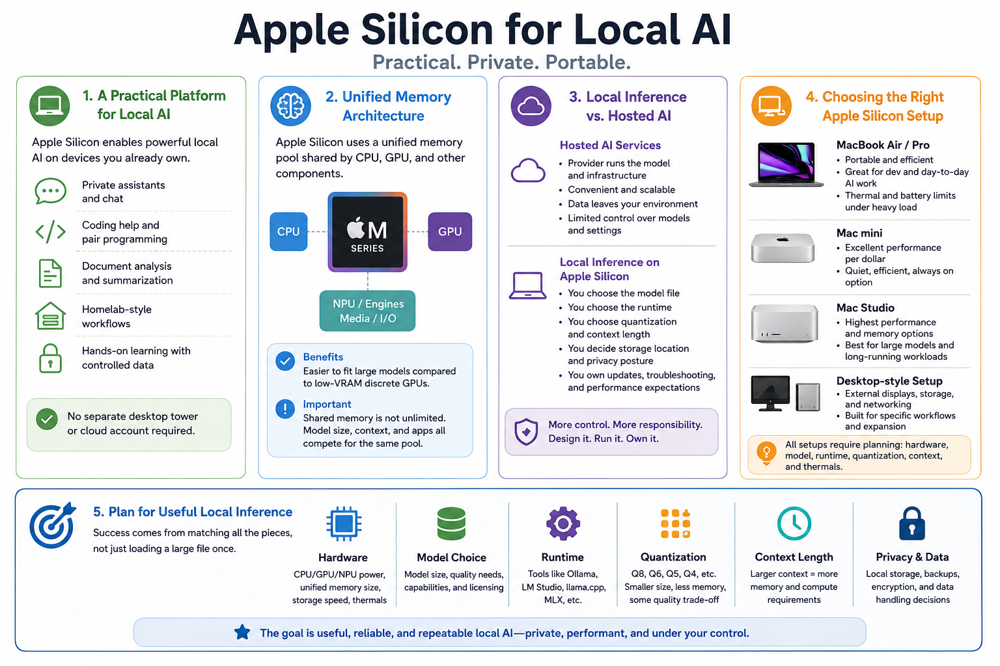

Why Apple Silicon Matters for Local LLMs
Connecting to LMS... Progress: in progress

Narration
Apple Silicon has become a practical platform for local AI experimentation, private assistants, coding support, document analysis, and homelab-style workflows. A modern Mac can run useful local language models without a separate desktop tower or cloud account. That makes it attractive for people who want hands-on learning, controlled data handling, and a portable AI workstation.
The key architectural difference is unified memory. In many traditional systems, the CPU has system RAM and a discrete GPU has separate VRAM. Apple Silicon uses a shared memory pool that CPU, GPU, and other components can access. This can make some local model workflows easier to fit than a low-VRAM discrete GPU system, but it does not make memory unlimited.
Local inference is different from hosted AI services. With hosted services, the provider operates the model and infrastructure. On Apple Silicon, the user chooses the model file, runtime, quantization, context length, storage location, and privacy posture. That control is useful, but it also means the user owns troubleshooting, updates, performance expectations, and data handling.
MacBooks, Mac minis, Mac Studios, and desktop-style setups each have strengths and limitations. A laptop is portable but may face battery and thermal limits. A desktop Mac can be quieter and more stable for long-running workloads. In every case, hardware, model choice, runtime, quantization, and context settings must be planned together. The goal is useful local inference, not simply proving that a large file can load once.